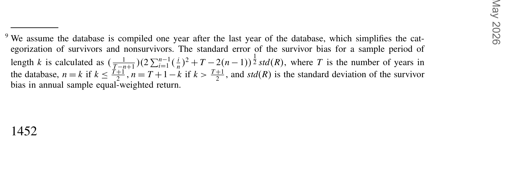
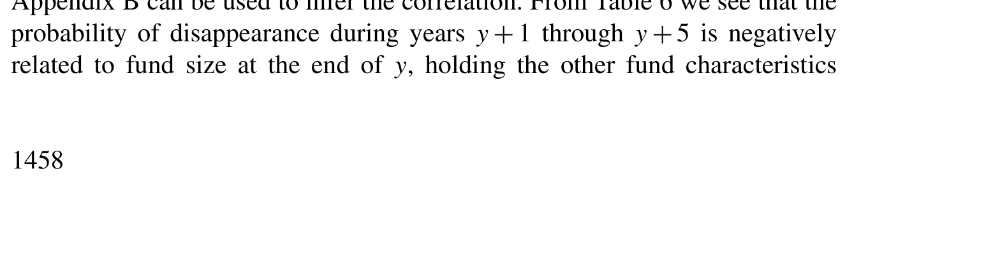
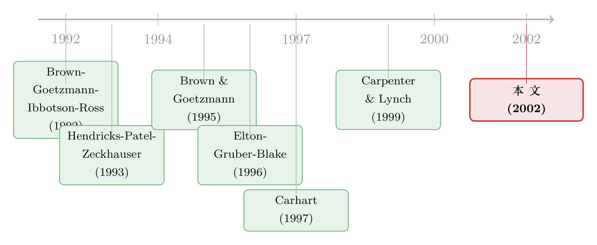

死人不会说话：当基金数据库只剩下「活下来」的那些基金
本文读的是 Carhart, Carpenter, Lynch & Musto (2002, Review of Financial Studies)：当一只基金的生死取决于它「过去好几年」的累计业绩，而不只是最近一年，那么你用「只剩活人」的样本去估算平均业绩，偏差不但存在，而且会随着样本期拉长而越变越大——在他们的数据里，这个年化偏差从 1 年样本的 0.07% 一路爬到 15 年以上样本的约 1%。
1 一个看不见的「幸存者」
先讲一个谁都知道、却又总被忽略的常识。
你打开一个商业基金数据库，想算一算「主动型股票基金到底跑赢大盘没有」。你把库里所有基金的收益拉出来，取个平均，得到一个数字。问题是：这个库里装的，往往只是今天还活着的基金。那些业绩烂到被清盘、被并掉、被悄悄从货架上撤下来的基金，早就不在你的样本里了。它们死了，而死人不会说话。
于是你算出来的「平均业绩」，其实是「活下来的那批人的平均业绩」。这就是大家耳熟能详的 幸存者偏差 (survivorship bias)。
到这里，故事似乎讲完了——「样本里少了差生，平均分自然虚高」，是个一句话就能说清的道理。但本文真正有意思的地方，恰恰是从这句「人人都懂」的话往下再走一步时，出现的一个反直觉的问题。
2 一个自然、却让人意外的问题
接着，一个自然的问题是：这个偏差，会随着样本期的长短而变化吗？
直觉上你可能会觉得：样本越长，越「全」，偏差应该越小才对——毕竟看的历史越久，越接近基金业的全貌。也有人会反过来想：偏差大概是个固定的常数，跟你看一年还是看二十年没关系。
本文的回答是：都不对，而且关键取决于「基金是怎么死的」。
这就要分清两种生存规则。所谓 单期生存规则 (single-period survival rule)，是指一只基金只要当期业绩低于某个门槛 b 就出局；而 多期生存规则 (multiperiod survival rule)，是指一只基金的存亡取决于它过去 n 年累计的业绩是否低于门槛。
为什么要纠结这个区别？因为本文的第一个、也是最漂亮的理论结论是：
- 如果是单期规则（
m = 1），那么年化的幸存者偏差是个常数，跟样本长度k完全无关（命题 1）； - 如果是多期规则（
m > 1），那么偏差会随样本长度k递增，只是增速越来越慢（命题 2）。
而经验证据偏偏指向后者：Brown and Goetzmann (1995) 发现，即便控制住最近一年的业绩，更早年份的业绩依然能预测一只基金的存活——这说明美国的共同基金，遵循的是一条多期生存规则。换句话说，「样本越长、偏差越大」这件反直觉的事，在真实世界里是会发生的。
那么，多期规则为什么会让偏差越滚越大？这才是真正关键的一步。
3 识别的核心：「直接淘汰」与「间接淘汰」
本文最精巧的概念，是把作用在某一年收益 R_t 上的「业绩淘汰」拆成两种。
设第 t 期的淘汰条件（conditioning statement）为：一只 m 岁以上的基金，若过去 m 年的收益之和低于门槛就出局。用论文的原始记号写出来就是
$$C_t \equiv \left\{ \sum_{\tau = t-m+1}^{t} R_\tau > b \right\}$$
注意，这个 C_t 把从 R_{t-m+1} 一直到 R_t 这 m 年的收益「捆」在一起做判断。于是对某一年的收益 R_t 而言：
- 凡是判断窗口里包含了
R_t的那些淘汰，叫直接淘汰（direct cut）。一个m年规则下，R_t会被C_t, C_{t+1}, \dots, C_{t+m-1}这m次淘汰直接「过筛」； - 凡是判断窗口不包含
R_t的淘汰，叫间接淘汰（indirect cut）。比如C_{t+m}判断的是R_{t+1}到R_{t+m}的和，跟R_t不重叠。
直觉上你会觉得间接淘汰「跟 R_t 无关、不该影响它的条件均值」。本文专门提醒：这是错的。 因为相邻的淘汰条件 C_t 与 C_{t-1} 本身是相关的，所以即便 R_t 和 C_{t-1} 独立，E[R_t \mid C_{t-1}, C_t] 也不等于 E[R_t \mid C_t]。只不过，多加一次直接淘汰，对条件均值的抬升，要比多加一次间接淘汰大得多。
把这个直觉形式化，引入两个核心对象。一是「再撑过一次淘汰」的条件存活概率
$$x_i \equiv \Pr\{ C_t \mid C_{t-1}, \dots, C_{t-i} \}$$
二是「经历了某一串淘汰之后」的条件期望收益
$$\mu_{i,j} \equiv E[\, R_{t+1-i} \mid C_{t-j}, \dots, C_t \,]$$
本文的命题 2 证明：只要 (i) 条件均值 μ 只依赖于、且严格递增于它所经历的直接淘汰次数（μ < μ_1 < μ_2 < \dots < μ_m），(ii) 存活概率与已撑过几次淘汰无关（x_i = x），(iii) 基金业处于稳态增长（各年龄分布逐年不变），那么端点条件下的 k 年偏差 \bar{\mu}^T_k 就随 k 递增。
4 为什么「最后一年」总是最惨：两年规则的解剖
抽象的命题不好懂，本文用一个 m = 2（两年规则）的例子把机制摊开，这也是全文最值得一步步跟下来的推导。
两年规则下，第 t 期的淘汰条件简化为 C_t \equiv \{ R_{t-1} + R_t > b \}。设 μ_1、μ_2 分别是「经受一次、两次直接淘汰」后的条件期望一年收益，按前面的直觉有 μ < μ_1 < μ_2。
现在站在样本终点 T 往回看。一只基金在样本里的最后一年收益，最多只能被一次直接淘汰过筛（它之后再没有年份去「捆」着它判断了）；同理，第一年的收益也只能被一次直接淘汰过筛。而处在中间的那些年，则要被两次直接淘汰过筛。
于是，对在 T 时刻存活下来的那批基金，终点年 T 的截面平均收益是「一岁新基金（完全没被淘汰过，均值是无条件的 μ）」与「更老的基金（最后一年，均值 μ_1）」的加权平均：
$$\mu^T_T = \hat{w}^T_{1,T}\,\mu + (1 - \hat{w}^T_{1,T})\,\mu_1$$
而在 T 之前的任意一年 t，老基金的收益要被两次直接淘汰过筛，于是
把 (6)、(7) 两式对照着看，结论就跳出来了：由于 μ < μ_1 < μ_2，终点年 T 的截面均值，永远低于它前面任何一年。所以当你把样本从「只看最后一年」一路加长时，你不断往时间序列平均里掺入那些「被抬得更高」的早年截面均值，整段样本的平均业绩 \bar{\mu}^T_T_k（即 \bar{\mu}^T_k）于是随 k 递增；而终点那一年的「拖累」在长样本里被摊薄，所以增速越来越慢。
这就是「样本越长、幸存者偏差越大」背后那台精巧的机器。本文还顺手指出：偏差未必总是单调递增——若稳态、等存活概率这些前提被破坏，反例是可以构造的。这是一篇难得地把「定理」和「定理的边界」都讲清楚的论文。
5 数据与两把业绩尺子
理论讲完，本文用 Carhart (1997) 的那套数据来对账。
数据库覆盖 1962 年 1 月到 1995 年 12 月所有已知的「分散化股票型」共同基金（剔除行业基金、国际基金、平衡基金），月度数据。样本共 2071 只基金，其中 1346 只到 1995 年 12 月 31 日仍在运作，725 只在此之前消失。年均淘汰率（attrition rate）为 3.6%（标准差 2.4%），其中并购占 2.2%、清盘占 1.0%。
业绩用两把尺子量：一是 组内调整收益 (group-adjusted return)，即基金收益减去同类基金的等权平均；二是 Carhart (1997) 的 四因子模型 (four-factor model) 的截距 α，模型在 Fama and French (1993) 的三因子上，加了一个捕捉 Jegadeesh and Titman (1993) 一年期动量的因子 PR1YR：
$$r_{i,t} = \alpha_i + b_i\,\mathrm{RMRF}_t + s_i\,\mathrm{SMB}_t + h_i\,\mathrm{HML}_t + p_i\,\mathrm{PR1YR}_t + e_{i,t}$$
本文还细致区分了两种「幸存者筛选」：端点筛选 (end-of-sample conditioning)——只保留样本末期还活着的基金；以及 回望筛选 (look-ahead conditioning)——要求基金在某个参考日之后再存活一段最短期限。后者尤其要紧，因为任何业绩持续性检验里，都天然含有回望筛选：你要拿「未来 n 期的业绩」去回归「过去的业绩」，就等于要求基金至少再活 n 期。
6 主要结果：从 0.07% 到 1%，以及被削弱的「持续性」
先看体检报告。Table 1 显示：幸存基金的四因子月度 α 是 −0.07%，非幸存基金是 −0.33%，幸存样本相对全样本的差异是每月 0.08%。若按个体基金的截面平均算，非幸存基金每年比幸存基金少赚约 4%，其中清盘基金表现最差。
接着是全文的招牌结论。如表 3 所示，年化的幸存者偏差随样本长度单调上升：1 年样本只有约 0.07%，而对长于 15 年的子样本，偏差爬到了约 1%。理论预言的「随 k 递增、增速递减」，在数据里得到了干净的印证。

Table 3: shows that the survivor bias increases in the sample length. For a
然后是对「持续性」的冲击。本文发现，幸存者筛选会系统性地削弱业绩持续性的证据——相对全样本，筛选后的持续性被「抹平」了。这一点与 Brown et al. (1992)、Grinblatt and Titman (1992)、Carpenter and Lynch (1999) 的理论预言一致，也和 Myers (2001) 在养老金上的发现相互呼应。换句话说，那些声称「赢家恒赢」的 hot-hands 文献，有一部分热度，可能是样本筛选「制造」出来的幻觉。（关于「跑赢大盘」本身会随持有期缩水这件事，可参见《"跑赢大盘"是会过期的》；关于短期持续性到底有多短，可参见《"手热"只有三个月》。）
但真正把这篇论文从「方法论提醒」抬升为「实证警告」的，是第四步。
7 反转：横截面回归里那个更隐蔽的陷阱
到这里你可能想：幸存者偏差不就是把平均分抬高一点吗？做横截面回归时，我又不关心截距，把它当成一个常数吸收掉不就行了？
本文的反转恰恰在这里：只要你拿来当解释变量的「基金特征」，本身与幸存者偏差相关，那条横截面回归的斜率就会被带偏。 比如 Table 1 的因子载荷已经透露，相对非幸存者，幸存基金更偏向大盘、价值风格——这意味着「规模」「价值」这类特征与「能否活下来」是相关的，于是当你用它们去解释业绩时，斜率系数被污染了。
如表 5 所示，在五年回望筛选下，本文估计了一批常用基金特征的斜率系数偏差，发现这些偏差量级可以很大，而且方向与直觉一致。

Table 5: shows that the regression coefficients from the five-year look-
那能不能用经典的样本选择纠偏来补救？本文老老实实地试了 Heckman (1976, 1979) 的两步法 (two-step correction for incidental truncation)，结论却泼了一盆冷水：模型设定误差 (model misspecification) 可能是个严重问题——想靠这套现成的程序去「修掉」幸存者偏差，并不像教科书里那么稳妥。这是一个诚实、也很有价值的负面发现。
更值得玩味的是本文在引言里点出的外推含义：这套逻辑根本不限于共同基金。许多研究把跨国的股市表现差异，归因于跨国的市场特征差异——可那些「失败的股市」的数据往往根本不可得，如果市场特征又恰好与存活相关，这类跨国比较就可能严重失真。（这正是《美国是侥幸活下来的那一个吗？》所追问的同一种幽灵。）同样，任何按公司特征给股票分组的研究，只要存活标准与这些特征挂钩，价差组合的收益就会被幸存者筛选带偏。
8 文献脉络
把这条研究线索捋一捋，会看到一个清晰的接力。
最早把幸存者偏差「形式化」的，是 Brown, Goetzmann, Ibbotson and Ross (1992)——他们在单期规则下给出了关键的理论洞见，指出幸存者筛选会凭空制造出业绩持续性的假象。几乎同时，Grinblatt and Titman (1992) 也从持续性的角度触及了这个问题。
接着，实证那一侧热闹起来：Hendricks, Patel and Zeckhauser (1993) 发现了短期「hot hands」，又在 (1997) 里专门讨论了幸存者偏差下持续性的「J 形」；Malkiel (1995)、Brown and Goetzmann (1995)、Elton, Gruber and Blake (1996) 各自用不同来源的数据去量这个偏差，其中 Brown and Goetzmann 给出了「多期生存规则」的关键证据。

然后，理论被推进到多期规则：Carpenter and Lynch (1999) 系统分析了幸存者筛选与淘汰效应如何扭曲持续性的度量。而本文（2002）正站在这条线索的汇合点上——它既接过 Carhart (1997) 那套覆盖 1962–1995 的完整数据，又把「多期规则下偏差随样本长度递增」这一理论结论严格证明出来，并一口气把它的后果贯通到平均业绩、持续性检验、横截面回归三个战场。它是这条脉络里少见的「理论与实证两头都钉死」的集大成之作。
9 评论与延伸（Q&A + 研究方向）
(a) 几个可能的疑问
Q：「样本越长偏差越大」难道不该反过来吗？长样本不是更全吗？
关键在于这里的「样本长度
k」指的是端点筛选下回溯的年数，而非「数据库收录得更全」。在多期规则下，越靠样本中间的年份，其存活基金被「直接淘汰」过筛的次数越多，截面均值被抬得越高；样本往前加长，就不断掺入这些被抬高的早年均值，于是年化偏差递增。它衡量的不是「数据完整度」，而是「筛选机制的累积作用」。
Q：单期规则和多期规则的差别，真有那么本质吗？
是的，本文命题 1 与命题 2 给出的就是定性差别：单期规则下偏差是与
k无关的常数，多期规则下则随k递增。而 Brown and Goetzmann (1995) 的证据——控制了最近一年业绩后，更早业绩仍能预测存活——把现实世界明确地推向了「多期」这一侧，这正是本文实证结论成立的前提。
Q：Table 1 里幸存者相对全样本只差每月 0.08%，听起来很小，值得大惊小怪吗？
月度
0.08%年化约1%，而这已是长样本下的量级；对一个长期复利的资产、对一个本就只在零附近挣扎的主动管理α而言，1%足以颠覆「主动基金到底有没有α」这类结论的符号。更何况本文真正的警告不在平均数，而在它对持续性检验和横截面回归斜率的扭曲。
Q：那直接上 Heckman 纠偏不就解决了？
本文恰恰泼了冷水：他们估了 Heckman (1976, 1979) 两步法，发现模型设定误差可能很严重。原因之一是生存的真实规则是多期、非线性的，而 Heckman 一阶段的 probit 选择方程很难把它设定对。纠偏工具用错了选择模型，反而可能引入新的偏差。
Q：这套结论只对共同基金有效吗？
完全不是，这正是本文野心所在。任何「只观测到活下来者」且「分组/解释变量与存活相关」的场景都受影响：跨国股市比较、按公司特征排序的股票价差组合、对冲基金、养老金。可不可得的「失败者数据」越系统性地缺失，偏差越危险。
Q：偏差一定随样本长度单调递增吗？
不一定。本文明确指出，命题 2 依赖稳态增长、等存活概率等前提；一旦这些前提被破坏，可以构造出偏差非单调的反例。这种「连自己结论的边界都讲清楚」的诚实，是本文质量的一部分。
(b) 几个可能的研究问题与提案
1）把这套「多期生存」逻辑搬到公司债基金 / 信用市场
【经济故事】公司债基金的清盘与并购，往往也取决于多年累计业绩，而信用资产的收益高度偏态、且与流动性紧密纠缠——幸存者筛选很可能同时污染「信用利差能否被基金特征解释」这类横截面回归。 【可行性】中。需要一个含「死亡基金」的债基面板（如 CRSP/Morningstar 债基库 + 并购清盘记录），识别上可复用本文「直接/间接淘汰」框架，但要重新刻画信用市场的存活规则，工作量不小但 doable。
2）外资持有人与「市场层面」的幸存者偏差
【经济故事】跨国研究常把「外资能进入的市场表现更好」当成开放的红利，但关掉的、被外资抛弃后萎缩消失的市场根本不在样本里。若「可投资度」与存活相关，这正是本文警告的跨国版本。 【可行性】中偏低。难点在于「消失的市场」数据极难获得；可行的折中是用市场层面的关停 / 降频事件做生存分析，识别偏弱，需谨慎。
3）用流动性度量重估持续性检验里的回望筛选偏差
【经济故事】本文指出任何持续性检验都内含回望筛选。若「难以脱手 / 低流动性」的基金更易在回望期内消失，那么持续性证据会与流动性筛选纠缠在一起。 【可行性】高。已有成熟的基金流动性与持仓数据，可在本文框架下，按流动性分层比较全样本与回望筛选样本的持续性差异，识别清晰、数据可得。
4）把 Heckman 纠偏换成「正确设定多期选择方程」的结构估计
【经济故事】本文发现 Heckman 两步法因设定误差而失灵。一个自然的下一步，是直接把多期、非线性的存活规则写进选择方程做结构估计，看能否真正「修掉」偏差。 【可行性】中。理论上 doable，本文已提供存活概率
x_i与条件均值μ_{i,j}的对象，但结构识别对分布假设敏感，需要大量稳健性检验。
我的判断
本文的贡献是「干净」二字：它把一个人人挂在嘴边、却从没被严格刻画的直觉，做成了可证明的命题，并诚实地标出了命题失效的边界；又把这套理论一口气贯通到平均业绩、持续性、横截面回归三处，最后还老实承认 Heckman 纠偏未必管用。这种「既给定理、又给定理的反例、还给纠偏的失败」的写法，本身就是方法论论文的范本。
对识别我有两点保留。其一，命题 2 严重依赖稳态增长与等存活概率，而 1962–1995 恰是美国基金业从小到爆发式扩张的非稳态阶段，「年龄分布逐年不变」这个前提在数据里多大程度成立，值得用实际的年龄分布去检验。其二，本文坦承样本里有 53 只非幸存基金完全没有收益数据——这恰恰意味着，他们对「全样本 vs 幸存样本」差异的估计，很可能低估了真实的幸存者筛选效应；换句话说，本文报出的 1% 也许还是个保守下限。
后续我最想看到的，是把这套框架移植到信用市场和外资持有人语境下，用今天更完整的「死亡基金」与「关停市场」数据，重新量一遍那条被幸存者悄悄抬高的曲线。
参考文献
Brown, S. J., W. N. Goetzmann, R. G. Ibbotson, and S. A. Ross (1992). Survivorship Bias in Performance Studies. Review of Financial Studies 5(4), 553–580.
Brown, S. J., and W. N. Goetzmann (1995). Performance Persistence. Journal of Finance 50(2), 679–698.
Carhart, M. M. (1997). On Persistence in Mutual Fund Performance. Journal of Finance 52(1), 57–82.
Carhart, M. M., J. N. Carpenter, A. W. Lynch, and D. K. Musto (2002). Mutual Fund Survivorship. Review of Financial Studies 15(5), 1439–1463.
Carpenter, J. N., and A. W. Lynch (1999). Survivorship Bias and Attrition Effects in Measures of Performance Persistence. Journal of Financial Economics 54(3), 337–374.
Elton, E. J., M. J. Gruber, and C. R. Blake (1996). Survivorship Bias and Mutual Fund Performance. Review of Financial Studies 9(4), 1097–1120.
Fama, E. F., and K. R. French (1993). Common Risk Factors in the Returns on Bonds and Stocks. Journal of Financial Economics 33(1), 3–53.
Grinblatt, M., and S. Titman (1992). The Persistence of Mutual Fund Performance. Journal of Finance 47(5), 1977–1984.
Heckman, J. (1979). Sample Selection Bias as a Specification Error. Econometrica 47(1), 153–161.
Hendricks, D., J. Patel, and R. Zeckhauser (1993). Hot Hands in Mutual Funds: Short-Run Persistence of Performance, 1974–88. Journal of Finance 48(1), 93–130.
Jegadeesh, N., and S. Titman (1993). Returns to Buying Winners and Selling Losers: Implications for Stock Market Efficiency. Journal of Finance 48(1), 65–91.
Malkiel, B. G. (1995). Returns from Investing in Equity Mutual Funds 1971–1991. Journal of Finance 50(2), 549–572.